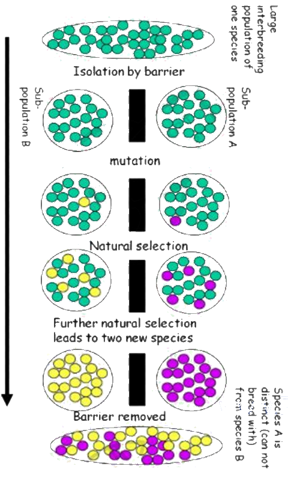
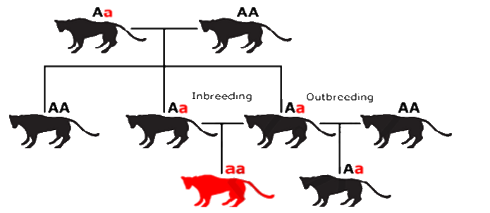

Classification, biodiversity and conservation
Life on Earth is enormously varied, and that variety is now under threat from human activity. This page covers how biodiversity is defined and measured, how organisms are adapted to their niches, how natural selection changes allele frequencies and produces new species, how living things are classified into three domains, and how zoos and seed banks help conserve endangered species.
Biodiversity and endemism
Biodiversity is the variety of living organisms in an area. It can be described at several levels: the variety of habitats and ecosystems, the variety of species in a habitat, and the variety of alleles within a species. The specification focuses on the last two: species diversity within a habitat, and genetic diversity within a species.
- Species richness: the number of different species present in a habitat. It is the simplest measure of biodiversity, but it ignores how many individuals of each species there are.
- Genetic diversity: the variety of alleles in the gene pool of a species or population. A species with high genetic diversity is more likely to contain individuals that can survive a change in the environment, such as a new disease.
- Gene pool: all the alleles of all the genes present in a population at a given time.
- Endemism: a species is endemic to an area if it is found naturally only in that area and nowhere else in the wild. Ring-tailed lemurs are endemic to Madagascar and koalas to Australia.
Endemic species matter for conservation because if their one habitat is destroyed, the species is lost worldwide. They often live in small, isolated populations, so they tend to have low genetic diversity as well. Islands and isolated mountain ranges have many endemic species because populations there have been cut off from others for a long time and have evolved separately. The places with the most species are not always the places with the most endemic species, which makes it hard to decide which areas to protect first.
Measuring biodiversity in a habitat
It is rarely possible to count every organism in a habitat, so a sample is taken. Plants and slow-moving animals are sampled with quadrats placed at random coordinates (generated from random number tables or a calculator), so that the sample is not biased by where the investigator chooses to look. Other methods include pitfall traps and sweep nets for insects and kick sampling in streams. The species found in each sample are identified with a key and counted.
Species richness alone can be misleading. Imagine two fields, each with five plant species. In one, all five are about equally common; in the other, one grass makes up almost everything and the other four are rare. The first is clearly more diverse. The index of diversity takes into account both the number of species and how evenly the individuals are spread among them:
D = N(N − 1) ÷ Σn(n − 1)
- N: the total number of organisms of all species in the sample.
- n: the number of organisms of one particular species.
- Σ: "the sum of": work out n(n − 1) for every species and add the results.
The higher the value of D, the greater the biodiversity. The lowest possible value is 1, which happens when only one species is present. Because the index can be calculated in the same way anywhere, it lets habitats be compared and changes in one habitat to be followed over time.
A sample from a rock pool contains: limpets 8, periwinkles 5, anemones 4, crabs 2, starfish 1. So N = 8 + 5 + 4 + 2 + 1 = 20.
Work out n(n − 1) for each species: 8 × 7 = 56, 5 × 4 = 20, 4 × 3 = 12, 2 × 1 = 2, 1 × 0 = 0.
A species with only one individual contributes nothing to the sum, but it still counts towards N.
Σn(n − 1) = 56 + 20 + 12 + 2 + 0 = 90.
N(N − 1) = 20 × 19 = 380.
D = 380 ÷ 90 = 4.22.
A common slip is to use N(N − 1) on the bottom and Σn(n − 1) on the top. The total for the whole sample always goes on the top, so D is never less than 1.
Measuring genetic diversity within a species
Genetic diversity can be measured directly by looking at DNA. A region of DNA that differs between individuals is cut out or copied and the fragments are separated by gel electrophoresis. If an individual is homozygous for that region, both copies of the DNA are the same length and give one band. If it is heterozygous, the two copies differ and give two bands.
The heterozygosity index is the proportion of individuals that are heterozygous for the gene or region studied:
H = number of heterozygotes ÷ number of individuals in the population
For example, if 9 out of 30 toads tested show two bands, H = 9 ÷ 30 = 0.30. A high value means many alleles are present and the population has plenty of genetic diversity. A low value suggests a population that has lost alleles, for example because it is small, isolated or inbred, and it is likely to be less able to adapt if conditions change. In practice the index is averaged over many genes.
Niches and adaptations
A niche is the role of a species in its habitat: everything about how it lives, including what it feeds on, what feeds on it, where it lives within the habitat, when it is active and the range of conditions it can tolerate. Two species cannot occupy exactly the same niche in the same habitat for long, because they would compete for the same resources until one of them was excluded. Similar species can share a habitat by feeding on different foods, feeding at different times or using different parts of the habitat.
An adaptation is a feature that increases an organism's chance of surviving and reproducing in its niche. Adaptations are inherited, so successful individuals pass them on. They are grouped into three kinds:
| Type | What it is | Examples |
|---|---|---|
| Anatomical | Structural features of the body, inside or out | Thick blubber in seals and whales to insulate against cold water; the sticky glandular hairs of a sundew that trap insects; a camel's broad, flat feet that spread its weight on sand and long eyelashes that keep sand out of its eyes |
| Physiological | How the body's processes work, often at the level of enzymes and chemical reactions | Diving mammals slow their heart rate under water and redirect blood to the brain and heart, and their muscles tolerate anaerobic respiration; a camel's kidneys make very concentrated urine, and its body temperature can rise by several degrees during the day, so less water is used for sweating |
| Behavioural | What the organism does, either inherited (instinctive) or learned | Birds migrating to avoid winter food shortages; camels sitting with their legs tucked under them early in the day, so less body surface touches the hot sand later; animals huddling together to reduce heat loss |
In an exam, name the type of adaptation and explain how it helps survival or reproduction. "Thick fur" alone earns little; "thick fur traps a layer of air, reducing heat loss by conduction, so less energy is used to keep warm" earns the marks.
Natural selection and allele frequencies
Within any population, individuals differ. New alleles arise by mutation, and meiosis and random fertilisation shuffle existing alleles into new combinations. The proportion of all the copies of a gene in a gene pool that are one particular allele is the allele frequency. Natural selection changes allele frequencies, and this change over generations is evolution.
There is variation within the population, caused by different alleles. New alleles arise by mutation.
A selection pressure acts on the population, for example a predator, a disease, a shortage of food or a change in climate.
Individuals with an allele that gives an advantage under this pressure are more likely to survive and reproduce. Individuals without it are more likely to die before reproducing.
The survivors pass the advantageous allele to their offspring.
Over many generations the frequency of the advantageous allele in the gene pool increases, and the population becomes better adapted to its environment.
Individuals do not change during their lifetime; it is the proportion of individuals carrying the allele that changes.
Avoid writing that organisms "adapt because they need to" or that a mutation happens "in order to" help survival. Mutations are random. Selection only acts on variation that already exists.
The Hardy-Weinberg equation
The Hardy-Weinberg principle describes a population that is not evolving: its allele and genotype frequencies stay the same from one generation to the next. For a gene with two alleles, A (dominant, frequency p) and a (recessive, frequency q):
p + q = 1 and p² + 2pq + q² = 1
Here p² is the frequency of the homozygous dominant genotype (AA), 2pq the frequency of heterozygotes (Aa) and q² the frequency of the homozygous recessive genotype (aa). The equilibrium only holds if five conditions are met: the population is very large, mating is random, there are no mutations, there is no migration into or out of the population, and there is no natural selection (all genotypes are equally likely to survive and reproduce).
Real populations never meet all these conditions exactly, which is what makes the equation useful. Allele frequencies are calculated in one generation and the expected genotype frequencies compared with the frequencies observed later. If the observed frequencies differ significantly from those expected, at least one condition is not being met: the allele frequencies are changing, and the population is evolving, for example because of selection.
In a population of moths, 9 % are pale, the phenotype caused by the recessive genotype aa. Find the percentage of heterozygous (carrier) moths.
Only aa individuals show the recessive phenotype, so q² = 0.09.
Always start from the recessive phenotype, because AA and Aa look the same and cannot be counted separately.
q = √0.09 = 0.3, so p = 1 − 0.3 = 0.7.
Heterozygotes: 2pq = 2 × 0.7 × 0.3 = 0.42, so 42 % are carriers. Homozygous dominant: p² = 0.49, or 49 %.
Check: 0.49 + 0.42 + 0.09 = 1.00.
Reproductive isolation and new species
A species is a group of organisms with similar characteristics that can interbreed to produce fertile offspring. Members of a species are reproductively isolated from other species. Horses and donkeys can mate, but their offspring, mules, are sterile, so horses and donkeys remain separate species.
New species form (speciation) when populations of one species become reproductively isolated, so that genes no longer flow between them. Each population then accumulates different genetic information: different mutations arise in each, and if the populations live in different conditions, different selection pressures favour different alleles. Over many generations the populations may become so different that they could no longer interbreed to produce fertile offspring even if they met again. They are then separate species.

- Geographical isolation: a physical barrier such as a mountain range, a river, a sea or a newly formed land bridge separates two populations. When the Isthmus of Panama formed about 3 million years ago, it separated marine populations on the Pacific and Caribbean sides, and many pairs of separate species have since evolved. Speciation after geographical separation is called allopatric speciation.
- Ecological isolation: two populations live in the same area but use different habitats within it, so they rarely meet.
- Seasonal (temporal) isolation: the populations breed or flower at different times of year, or different times of day.
- Behavioural isolation: courtship songs, displays or other signals change so that individuals no longer recognise each other as mates. Chiffchaffs and willow warblers look almost identical but have different songs and do not interbreed.
- Mechanical isolation: the reproductive organs, or in plants the structure of the flowers, no longer match, so mating or pollination fails.
- Hybrid inviability or sterility: mating happens, but the hybrid zygote does not develop, or the hybrid offspring are infertile.
When the isolating mechanism operates within one area, without a physical barrier (for example through behavioural or seasonal isolation), the process is called sympatric speciation. When one ancestral species gives rise to many species, each adapted to a different niche, as happened with the finches of the Galápagos Islands, which evolved different beaks for different foods, the process is called adaptive radiation.
Classification
Classification organises the variety of life into groups based on the relationships between organisms. Organisms are grouped by their similarities and differences in phenotype (their observable features, including anatomy, physiology and behaviour) and, increasingly, in genotype (their DNA). The aim is for the groups to reflect evolutionary relationships, so that organisms grouped together share a recent common ancestor. Classification is built around the species concept, because the species is the basic unit that the larger groups are made from.
Organisms are placed in a hierarchy of groups (taxa), each containing the groups below it, from the largest to the smallest:
| Taxon | Domestic cat | Human |
|---|---|---|
| Domain | Eukarya | Eukarya |
| Kingdom | Animalia | Animalia |
| Phylum | Chordata | Chordata |
| Class | Mammalia | Mammalia |
| Order | Carnivora | Primates |
| Family | Felidae | Hominidae |
| Genus | Felis | Homo |
| Species | Felis catus | Homo sapiens |
Each species has a two-part scientific name, the binomial: the genus name with a capital letter, followed by the species name in lower case, both in italics (or underlined when handwritten), such as Homo sapiens. Because every scientist uses the same name, there is no confusion between different local or common names.
Molecular evidence
Classification used to rely almost entirely on appearance, which can mislead: unrelated organisms can look alike because they live in similar environments, and members of the same species can look very different (males and females, for example). Molecular phylogeny compares molecules instead:
- DNA base sequences: the more similar the sequence of bases in the same gene in two species, the more closely related they are, because fewer mutations have built up since they shared a common ancestor.
- Amino acid sequences: proteins found in many species, such as cytochrome c, can be compared in the same way.
- RNA sequences: ribosomal RNA is present in every organism and changes slowly, so it is useful for comparing very distantly related groups.
These comparisons are used to build phylogenetic trees, branching diagrams that show how species are thought to have evolved from common ancestors. Each branch point represents a common ancestor, and species that branch apart more recently are more closely related.
The three-domain system
For many years, all life was split into prokaryotes and eukaryotes, and organisms were classified into five kingdoms. From the late 1970s Carl Woese compared the base sequences of ribosomal RNA from many organisms and found that prokaryotes fall into two very different groups, as different from each other as either is from eukaryotes. In 1990 he and his colleagues proposed that life should be divided into three domains, a level of classification above the kingdom.
| Feature | Bacteria | Archaea | Eukarya |
|---|---|---|---|
| Cell type | Prokaryotic | Prokaryotic | Eukaryotic |
| Nucleus and membrane-bound organelles such as mitochondria | Absent | Absent | Present |
| Peptidoglycan in the cell wall | Present | Absent | Absent |
| Membrane lipids | Unbranched fatty acid chains, ester-linked | Branched chains, ether-linked | Unbranched fatty acid chains, ester-linked |
| Histone proteins with the DNA | Absent | Present in many | Present |
| RNA polymerase | One type, relatively simple | One type, complex and similar to the eukaryotic enzyme | Several types, complex |
| First amino acid carried by tRNA at the start of a protein | Formylmethionine | Methionine | Methionine |
| Growth stopped by antibiotics such as streptomycin | Yes | No | No |
Many archaea live in extreme environments, such as hot springs, very salty lakes or places without oxygen, although others are found in soil and the oceans. In several molecular features, such as their histones and RNA polymerases, archaea are more similar to eukaryotes than to bacteria. The domain Eukarya contains the kingdoms Protoctista, Fungi, Plantae and Animalia.
How the scientific community evaluates new ideas
Woese's proposal was not accepted at once. Like any new scientific claim, it had to be critically evaluated by other scientists before it changed how life is classified.
The scientist publishes the findings in a scientific journal, presents them at conferences and shares data online, so that other scientists can examine them.
Before publication, the paper is peer reviewed: other experts in the field check that the methods are valid, the data support the conclusions and the work is original.
Peer review filters out flawed or poorly supported work before it enters the scientific record.
Other scientists repeat the experiments or collect new data, for example by sequencing more organisms, to see whether the results can be reproduced.
If the new evidence supports the idea, it gradually gains acceptance; if not, the idea is rejected or modified. The three-domain system is now widely accepted because sequencing many more genes has supported Woese's findings.
Classification is not fixed. As new evidence, especially molecular evidence, becomes available and is evaluated, organisms can be moved between groups and new groups can be created.
Threats to biodiversity
The variety of life is now being reduced faster than at any time in human history, mainly because of human activity: destruction of habitats for farming, building and logging; over-hunting and over-fishing; pollution; introduced species that compete with or prey on native species; and climate change. A species is endangered when it is at high risk of becoming extinct.
Small populations face an extra problem. With few individuals, some alleles are lost by chance in each generation, and relatives are more likely to mate with each other. This inbreeding increases the proportion of homozygous individuals, so harmful recessive alleles are more likely to be expressed, and the population's genetic diversity and ability to adapt both fall. Outbreeding, mating between unrelated individuals, increases heterozygosity and keeps genetic diversity high.

Conservation: zoos and seed banks
Conservation can take place in situ, in the species' natural habitat (for example in national parks and nature reserves), or ex situ, away from the natural habitat, in zoos, botanic gardens and seed banks. Ex situ conservation is used when a population is too small, or its habitat too damaged, for it to survive in the wild.
The role of zoos
- Captive breeding programmes: endangered animals are bred in zoos to increase their numbers, so that the species does not become extinct. To keep genetic diversity high, zoos keep stud books (records of each animal's ancestry) and use them, together with DNA profiles, to pair unrelated animals. Animals, or their sperm for artificial insemination, are exchanged between zoos around the world, which brings new alleles into each population and avoids inbreeding. Techniques such as in vitro fertilisation and the freezing of sperm and embryos are also used.
- Reintroduction programmes: captive-bred animals are released into the wild to restore or reinforce wild populations. The Arabian oryx became extinct in the wild in the early 1970s; animals bred in captivity were released in Oman from 1982 and later in other countries. Release is only worthwhile if the original threat (such as hunting or habitat loss) has been removed, and animals usually need to be prepared first, for example by learning to find food and avoid predators.
- Scientific research: zoos study the biology, behaviour, diseases, nutrition and reproduction of endangered species, which improves breeding success in captivity and informs conservation in the wild.
- Education: visitors learn about endangered species, the threats they face and what people can do to help. This builds public support and funding for conservation.
| Strengths of zoo programmes | Limitations |
|---|---|
| Protect animals from predators, poaching and disease, and give veterinary care | Captive populations are small, so some genetic diversity is lost even with careful breeding |
| Increase population size quickly, with monitored pregnancies | Some species breed poorly in captivity or need conditions that are hard to provide |
| Keep genetic diversity high through stud books and exchanges | Animals bred in captivity may lack the behaviour needed to survive in the wild |
| Provide animals for reintroduction | Reintroduction is expensive and fails if the habitat is still unsuitable or the threat remains; released animals may carry diseases to wild populations |
The role of seed banks
A seed bank stores seeds in conditions that keep them alive but dormant for many years, sometimes centuries. The Millennium Seed Bank, run by the Royal Botanic Gardens, Kew, in the UK, holds seeds from many thousands of wild plant species from around the world.
Seeds are collected from many individual plants of a species, across its range.
Seeds from many different parents carry a wider range of alleles, so the stored sample keeps more of the species' genetic diversity. Taking only a small fraction of the seeds does not harm the wild population.
The seeds are cleaned and checked, for example by X-ray, to make sure they contain a fully formed embryo and are not damaged or infested.
The seeds are dried to a low water content.
With little water, metabolic reactions almost stop, so the seeds do not germinate or use up their food stores, and ice crystals that would damage cells cannot form when they are frozen.
They are sealed in airtight containers and stored at about −20 °C.
Low temperature slows enzyme activity further and stops the growth of fungi and bacteria that would decompose the seeds.
Samples are germinated at intervals to check they are still viable. If germination falls too low, a sample is grown into adult plants to produce fresh seed for storage.
- Advantages: seeds are small, so huge numbers of species can be stored cheaply in a small space; they stay viable for a long time; they preserve the genetic diversity of the species; and stored seeds can be used to restore habitats, to reintroduce species, and in research, for example to find crops resistant to drought or disease.
- Limitations: some seeds, including those of many tropical trees such as cocoa and mango, are damaged by drying or freezing and cannot be stored this way; these are kept as growing plants in field gene banks or as tissue cultures. Seeds stored for many years do not evolve with their changing natural environment, and testing viability uses up some of the stored seed.
Plants are easier to conserve ex situ than animals: plants produce many seeds, collecting some does no harm, and dried, frozen seeds take little space and almost no care. Animals have to be kept, fed and bred as living individuals.
Quick checks
A sample contains three species with 6, 3 and 1 individuals. What is the index of diversity, D?
N = 10, so N(N − 1) = 90. Σn(n − 1) = 30 + 6 + 0 = 36. D = 90 ÷ 36 = 2.50. Turning the fraction upside down gives 0.40, which is impossible because D can never be less than 1.
Of 40 animals tested, 14 show two bands for a gene on a DNA gel. What is the heterozygosity index?
Animals with two bands are heterozygous, so H = 14 ÷ 40 = 0.35. The value 0.65 is the proportion of homozygotes, the commonest mix-up.
In a population in Hardy-Weinberg equilibrium, 16 % of individuals have the recessive phenotype. What proportion are heterozygous?
q² = 0.16, so q = 0.4 and p = 0.6. Heterozygotes = 2pq = 2 × 0.6 × 0.4 = 0.48. The value 0.36 is p², the homozygous dominant frequency. A common error is to take q = 0.16 instead of square-rooting it.
Which observation best supports placing Archaea in a separate domain from Bacteria?
Woese's three-domain system was based on molecular evidence, especially rRNA sequences. Having no nucleus is shared with Bacteria, so it cannot separate them, and many archaea live in ordinary habitats.
Which is a physiological adaptation?
Slowing the heart rate is a change in how the body's processes work, so it is physiological. Blubber and sticky hairs are structures (anatomical), and migration is behavioural.
Why do zoos exchange animals between captive breeding programmes?
Pairing unrelated animals from different zoos is outbreeding: it keeps heterozygosity and genetic diversity high. Increasing homozygosity is what inbreeding does, which programmes try to avoid.
Why are seeds dried before being stored in a seed bank at −20 °C?
The embryo must stay alive. Drying makes the seed dormant by slowing enzyme activity, and with little water present, damaging ice crystals cannot form during freezing.